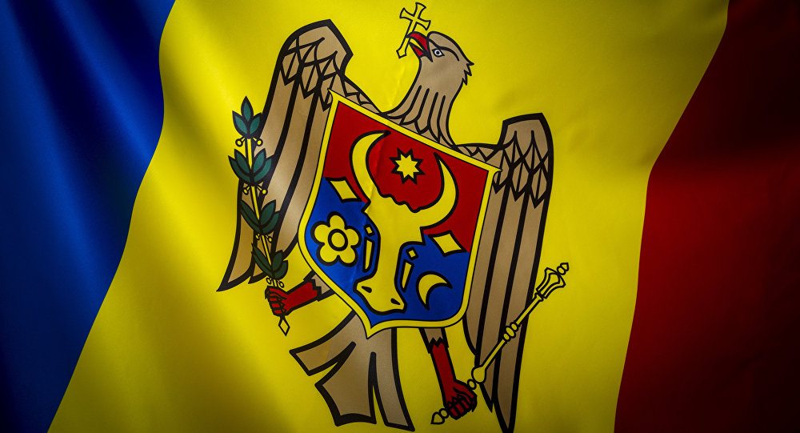

Capitala Republicii Moldova este Chișinău. Limba majoritară este limba română folosind alfabetul latin, dar rusa este foarte folosită în societate. Moldova este o republică multietnică și a suferit conflicte etnice violente. În 1994, acest conflict a dus la crearea Transnistriei, o regiune nesuverană recunoscută doar de Moscova care ocupă teritoriul din estul Moldovei, între Nistru și granița cu Ucraina și care are propriul său guvern și monedă (rubla transnistreană). În ultimii ani au reapărut legături economice între R.Moldova și regiunea nesuverană Transnistria dar negocierile politice încă eșuează. Religia majoritară din R.Moldova este majoritar ortodoxă, aparținând de Mitropolia Chișinăului și Moldovei (ținând de Biserica Rusă), sau/și de Mitropolia Basarabiei (parte a Bisericii Ortodoxe Române). Economia Moldovei este majoritar agricolă, principalele activități economice fiind agricultura, procesarea produselor agricole și viticultura. O dată cunoscută ca „grădina” imperiului comunist Uniunea Sovietică, R.Moldova și-a pierdut mare parte din piețele de desfacere rusești pentru produsele sale agricole și explorează noi posibile piețe de desfacere, în special în UE.
The image is a link. You can click on it.
